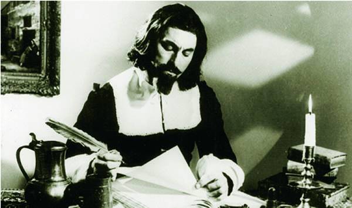
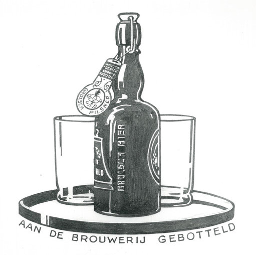
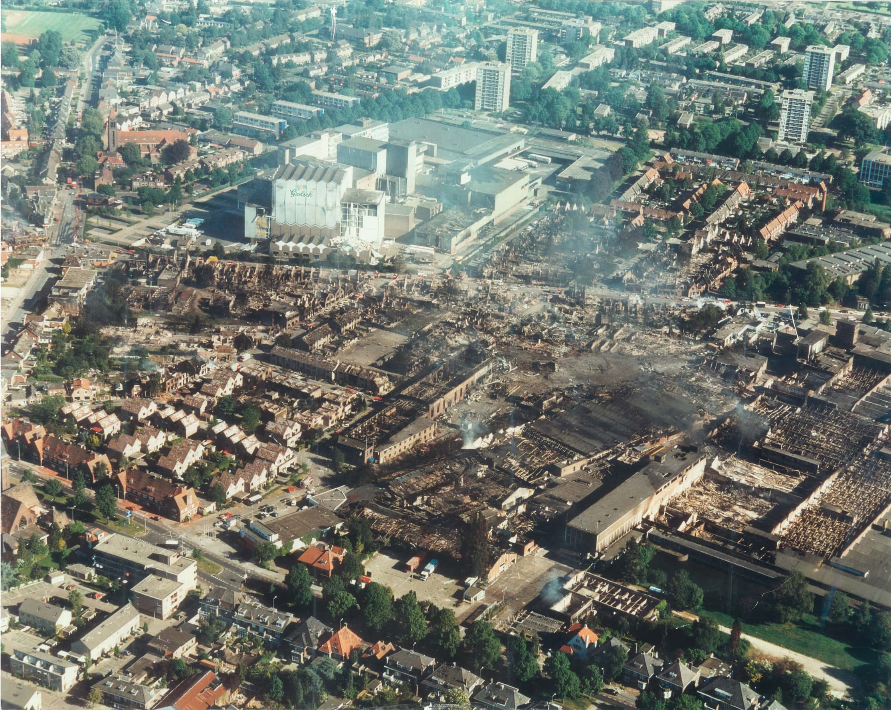
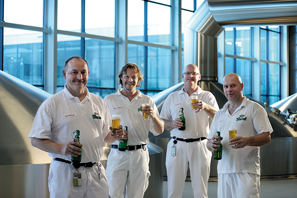

It was a daring move, setting up a Brewery in Grolle in 1615, the height of the Dutch Revolt. Eighty years of war made things difficult for our founder, Willem Neerfeldt and his family, but they persevered.
Around 1650, Willem took on Peter Kuijper, an ambitious apprentice brewer. Infatuated by Willem’s daughter, Peter did his very best to impress, trialling and revising formulas. His first two brews were instantly rejected. However, his third included a second variety of hops, unique to the 17th century. The first hop was for Aroma, the second for Bitterness, giving it a more substantial depth of flavour. It’s a triumph to this day and Grolsch is still brewed with two varieties of hop, giving it its bold, distinctive taste.
Peter’s genuine talent was obvious, not just to Willem but his daughter too - who he happily married in 1676.
From the first brewery in 1615, Grolsch was brewed only in Groenlo until Theo de Groen took over the Enschedesche BierBrouwerij in Enschede in 1922.
Theo was a man known for his determination, who knew what he wanted. When the crown cap bottle was introduced as the new standard, he never had a second of doubt whether he too would adopt it. ‘It’s I who decides what I put in my beer in’. Despite its higher production costs, the swing-top remained, giving Grolsch its iconic and distinctive appearance today.
Grolsch beer has been brewed based on family tradition for centuries. The tenacity of the Neerfeldt, Kuijper, Haperink and DeGroen’s legacies shaped the characteristic flavour of present-day Grolsch beer. Even today, our Master Brewer Marc is the son of our Master Brewer before him, something we are incredibly proud of.
On 13th May 2000, Enschede was struck by a fireworks disaster that occurred at SE Fireworks. The Grolsch Brewery was less than 200 metres from the fireworks factory, and the damage was significant.
The brewery stayed closed for weeks. However great the loss was, it brought our team closer together. Our bold spirit rallied us, we worked tirelessly to repair the damage and ensure our Grolsch beer kept its original flavour. We built a 7km pipe from the old brewery to our new one, giving us access to the same water source, ensuring the same great tasting beer.
The new Grolsch brewery is one of the most innovative and enduring breweries in the world. Our uncompromising nature means we use only the very best, natural ingredients and only the purest water, with nothing artificial added. It also means that we take sustainability seriously - the entire brewing process is done to the highest possible environmental standard, with 99.8% of our waste being recycled.